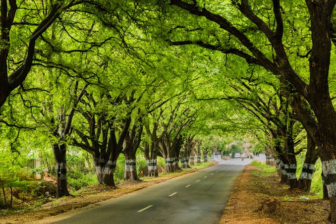

Aliyar Dam
A peaceful spot surrounded by hills and greenery.

Monkey Falls
A popular picnic spot with natural streams.

Topslip
A gateway to rich wildlife and forest experiences.

Nestled at the foothills of the Western Ghats, Pollachi is a charming town in Tamil Nadu, known for its lush greenery, coconut farms, pleasant climate and rich cultural heritage. From scenic tourist spots to authentic local food, Pollachi offers a perfect blend of nature, tradition and modern lifestyle.

Pollachi, located in the Coimbatore district, is often called the "Coconut City" of Tamil Nadu.
The town is famous for its vast coconut plantations, clean environment and warm, friendly
people.
A peaceful spot surrounded by hills and greenery.
A popular picnic spot with natural streams.
A gateway to rich wildlife and forest experiences.
Pollachi is known for its simple and culturally rich lifestyle. The town celebrates traditional festivals with great enthusiasm and is also a major center for agriculture, especially coconut, banana and jaggery production.

A trip to Pollachi is incomplete without tasting its local delicacies like filter coffee, idli, dosa, parotta, and fresh coconut-based dishes. The town also has several popular eateries that serve authentic Tamil Nadu cuisine.

Pollachi is more than just a town — it's an experience of nature, culture and simplicity. Whether you are a nature lover, a food enthusiast or someone seeking a peaceful getaway, Pollachi is the perfect place to explore.
The weather is pleasant, ideal for sightseeing and outdoor activities.
Discover the places,peoples and lifestyle of pollachi.
search the Place in Pollachi.